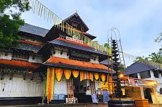
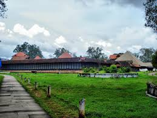
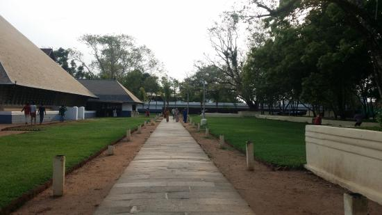
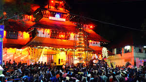
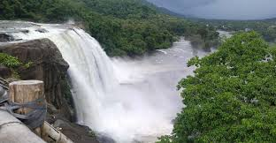
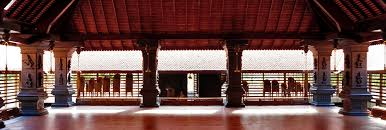
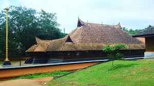

THRISSUR

About Thrissur
Thrissur, the **Cultural Capital of Kerala**, is famous for **Thrissur Pooram, Vadakkunnathan Temple, and Kerala Kalamandalam**. It is also a hub for **traditional arts and classical music**.
Thrissur at a Glance
Famous For: Temples, Festivals, Art, Culture
District: Thrissur
Best Season to Visit: October – March
Weather: Summer 27-35°C, Winter 22-30°C
How to Reach Thrissur
By Air
The nearest airport is **Cochin International Airport (COK)**, about **50 km from Thrissur city**.
By Train
Thrissur has a major **railway station** with connections to all major cities in India.
By Road
Thrissur is well connected via **NH-544 and NH-66**, making it easily accessible from major Kerala cities.
Top Attractions in Thrissur
Vadakkunnathan Temple

A UNESCO-recognized temple dedicated to **Lord Shiva**, famous for its **mural paintings and grand architecture**.
IMAGES GALLERY:








VIDEOS GALLERY:
Here is a vedio that might help you understand more;
Athirappilly Waterfalls

Known as the **"Niagara of India"**, this waterfall is one of the most **breathtaking destinations** in Kerala.
IMAGES GALLERY:





VIDEOS GALLERY:
Here is a vedio that might help you understand more;

Kerala Kalamandalam

A world-famous **art academy** preserving **Kathakali, Mohiniyattam, and other traditional Kerala dance forms**.
IMAGES GALLERY:






VIDEOS GALLERY:
Here is a vedio that might help you understand more;
Must-Try Restaurants in Thrissur
- Indian Coffee House
- Hotel Bharat
- Ponnu’s Restaurant (Traditional Kerala Cuisine)
- Pathans Restaurant
Best Places for Shopping
- Sobha City Mall
- Textile and Gold Markets
- Pattalam Road Handicrafts